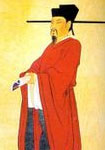
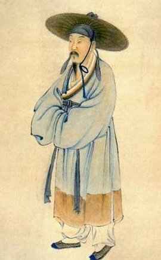
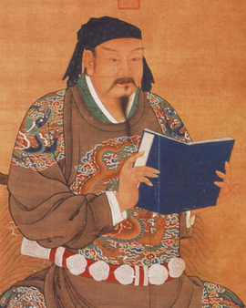

文天祥(1236年6月6日-1283年1月9日)，初名云孙，字宋瑞，又字履善。道号浮休道人、文山。汉族江右民系。江西吉州庐陵(今江西省吉安市青原区富田镇 )人，南宋末政治家、文学家，爱国诗人，抗元名臣、民族英雄，与陆秀夫、张世杰并称为"宋末三杰"。 著有《文山诗集》、《指南录》、《指南后录》、《正气歌》等。

陆游（1125年—1210年），字务观，号放翁南宋文学家、史学家、爱国诗人。陆游出生于名门望族、江南藏书世家。陆游的高祖陆轸是大中祥符年间进士，官至吏部郎中；祖父陆佃，师从王安石，精通经学，官至尚书右丞，所著《春秋后传》、《尔雅新义》等是陆氏家学的重要要典籍。 陆游的父亲陆宰，通诗文、有节操，北宋末年出仕，南渡后，因主张抗金受主和派排挤，遂居家不仕。
岳飞（1103—1142），字鹏举，宋相州汤阴县人，南宋抗金名将，中国历史上著名军事家、战略家，民族英雄，位列南宋中兴四将之一。他于北宋末年投军，从1128年遇宗泽起到1141年为止的十余年间，率领岳家军同金军进行了大小数百次战斗，所向披靡，“位至将相”。1142年1月，岳飞以“莫须有”的“谋反”罪名被杀害。宋孝宗时岳飞冤狱被平反，改葬于西湖畔栖霞岭。追谥武穆，后又追谥忠武，封鄂王。